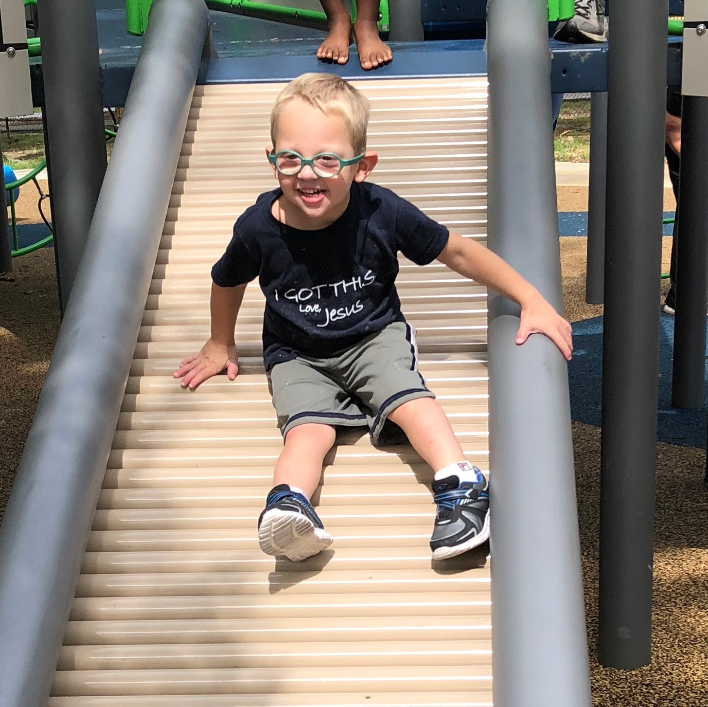

Wyatt
America Christianson SyndromeWyatt was diagnosed with Christianson Syndrome a month before his 2nd birthday. We thought he’d never talk, run, jump, and many other things. He is almost 4 and he can say 40 words, run, jump, climb, and so much more! He surprises us daily and I’ve learned to never expect anything less from him!
Get involved Back to all stories